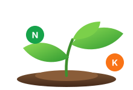

Clasificación de fertilidad del suelo (IA)
Analiza los datos del suelo y obtén una predicción de su fertilidad.
Ver análisis
Chat con AgroIA
Consulta tus datos, recibe recomendaciones y controla el ESP32.
Analiza los datos del suelo y obtén una predicción de su fertilidad.
Ver análisis
Consulta tus datos, recibe recomendaciones y controla el ESP32.